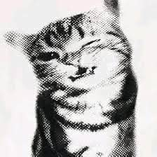

My reviews
Marcus Aurelius
Read this during a stressful semester and it genuinely helped.
Short chapters make it easy to revisit anytime.
Seneca
GOAT.
Epictetus
My favorite of the three so far.
The focus on what's within our control changed how I think.